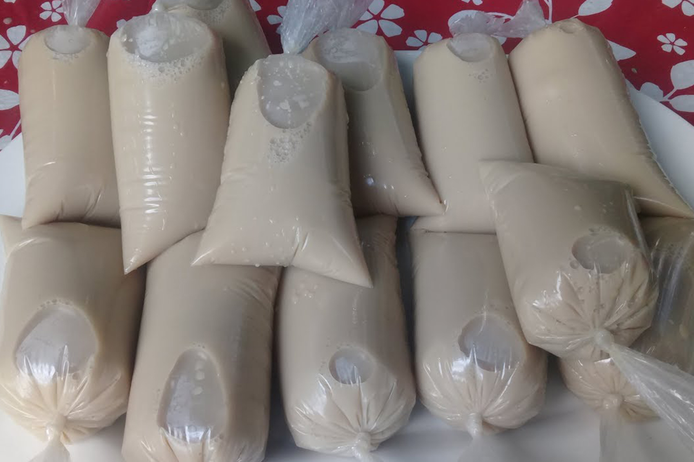

CHARAMUSCAS

LOS INGREDIENTES BASE DE ESTE DULCE TÍPICO SON EL PILONCILLO Y LA MANTEQUILLA, AUNQUE TAMBIÉN SE LES AGREGA AZÚCAR Y NUEZ COMO VALOR AGREGADO.
SI BIEN SU ORIGEN ES DESCONOCIDO, ES EN GUANAJUATO DONDE SE HAN HECHO FAMOSAS, PUES SON EL DULCE TÍPICO EN FORMA DE MOMIA QUE SE VENDE COMO SUVENIR EN LAS AFUERAS DEL MUSEO DE LAS MOMIAS Y EN LOS MERCADOS DE ARTESANÍAS LOCALES.